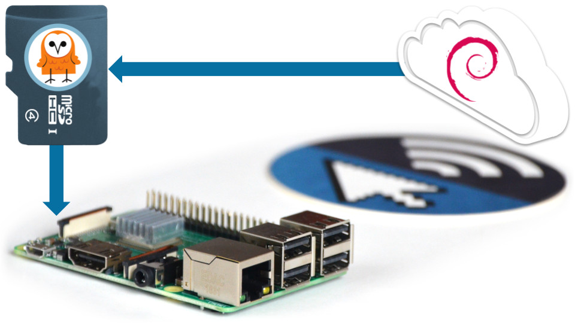
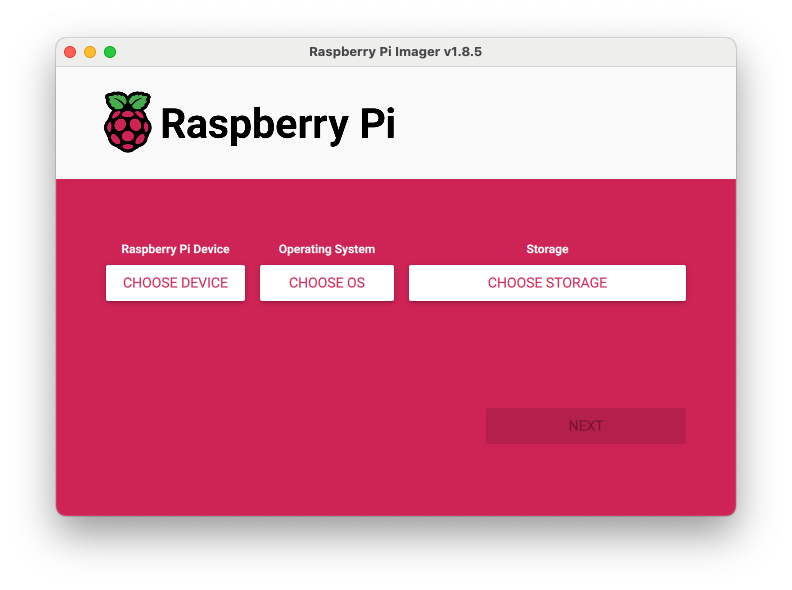
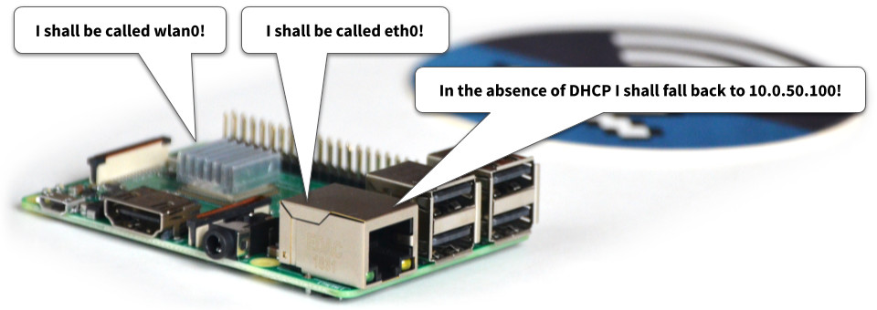
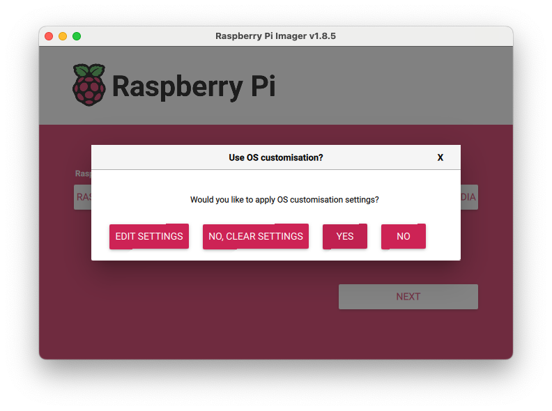
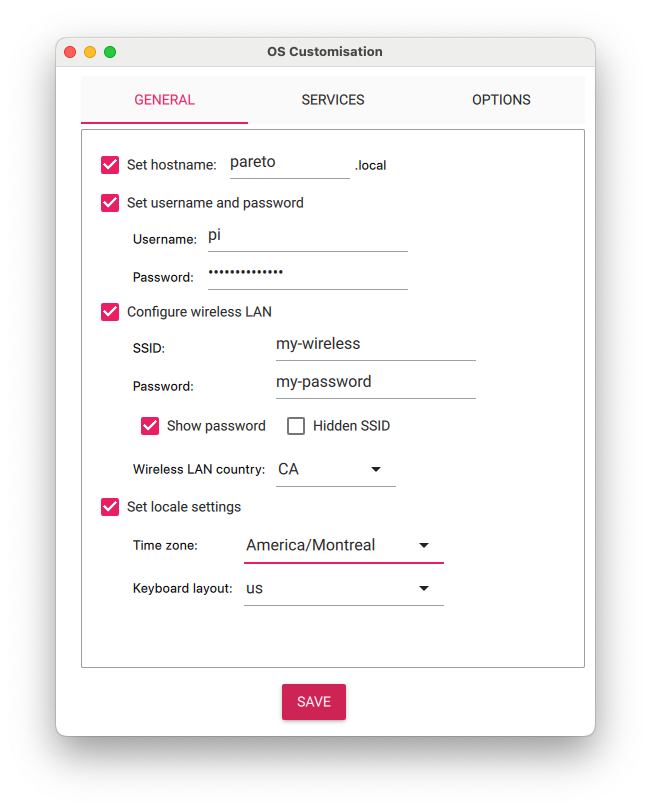
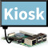

Prepare a headless Raspberry Pi from scratch
Our step-by-step guide to prepare a lean yet versatile SD card image based on Raspberry Pi OS Lite.

The TL;DR (Too Long; Didn't Read)
Learn how we at reelyActive prepare a SD card image for a headless Pi.
- What will this accomplish?
- A clean, lean installation of the latest Raspberry Pi OS Lite build ready to install Node.js and other programs like our Pareto Anywhere middleware.
- Is there an easier way?
- Yes, you can simply flash a ready-made disk image to a SD card . This will include `pareto-anywhere` and other related open-source software.
- So why would I read this?
- To understand and follow the process to create your own SD card image.
Flashing the OS to a SD Card Step 1 of 5
Download the latest version of Raspberry Pi Imager.
- Why Raspberry Pi Imager?
-
It is officially supported by the Raspberry Pi Foundation, and works on various OSes, including Raspberry Pi OS itself.
It manages all of the various Raspberry Pi OS images, ensuring you'll be installing the latest available option for your selection.
- Why Lite?
- It includes all the key ingredients for headless operation while keeping the disk image small.

Prerequisites
We'll flash the SD card with Raspberry Pi Imager, a friendly open source tool that you can download here.
Flash the Raspberry Pi OS image to the SD card Part 1
We recommend using micro SD cards from reputable vendors of at least 4GB size.
From the computer with which you intend to flash the SD card :
- Insert the SD card (via adapter if required) and observe that it is recognised/mounted by the operating system
- Run Raspberry Pi Imager (see Prerequisites above) by double-clicking its executable AppImage or desktop icon
- In the Raspberry Pi Imager interface, select the target Raspberry Pi device
- In the Raspberry Pi Imager interface, select the target Operating System
- In the Raspberry Pi Imager interface, select the target Storage (ie: the SD card that you'd like to flash.)
Proceed to the next step once the SD card is flashed and verified.
Pre-configuring the OS Step 2 of 5
Configure Raspberry Pi OS before with Raspberry Pi Imager, ensuring a painless initial connection.
- Why more pre-config?
- Unless you have a monitor and keyboard for the Pi, good luck with the first connection otherwise!
- Why so difficult to connect?
- By default SSH is disabled (for security) so even if you can reach the Pi over a network, it will refuse to connect!

After selecting the Pi device, the Pi OS, and SD card, when selecting "Next", a dialogue will ask if you'd like to customise the Raspberryp Pi OS settings.
Be sure to select "Edit Settings"; selecting "Yes" will apply the settings previously used and you may have to start over!

Set General customisation options Part 1

- Set the hostname to pareto.
This is how the Raspberry Pi will appear on the network. -
Set the username / password for the Raspberry Pi.
For example, you can use `pi` for the username and `berryinsecure` for the password. This will be the username and password used when logging in to the Raspberry Pi via the terminal or SSH.As of April 2022, Raspberry Pi OS no longer ships with a default username & password!
-
Configure wireless LAN
Set the SSID and password for the WiFi network to which the Raspberry Pi will connect.
The country code should be set to the appropriate value for your region. - The locale settings can be set now, but are not required at this step, and can be set at a later.
Set Services customisation options Part 2
This will allow us to SSH into the Pi on the first boot.
First boot Step 3 of 3
Boot the Pi for the first time and SSH in via WiFi.
- Why connect over Ethernet?
- Because we know the Pi's static IP address, making this the easiest way to connect at first.
- Why use SSH?
- Unless you have a display and keyboard connected to the Pi, the only way to remotely execute commands is over SSH!
The SD card should only be inserted into (or removed from) the Pi when it is disconnected from power.
Boot the Pi and connect via SSH over Ethernet Part 1
With the SD card inserted into the Pi, complete the following:
- Apply power to the Pi
- Connect the computer with the Pi using a network (Ethernet) cable
- Set the computer to use the static Ethernet IP address 10.0.50.101
- Open a terminal and SSH into the Pi with the command
ssh pi@10.0.50.100and, when prompted, enter the password berryinsecure (before April 2022, the default password was raspberry)
Now that you're logged in to the Pi, it is possible to execute commands such as raspi-config.


Tutorial prepared with ♥ by James Eberhardt.
You can reelyActive's open source efforts directly by contributing code & docs, collectively by sharing across your network, and commercially through our packages.Where to next?
Continue exploring our open architecture and all its applications.
-

-
Configure a Raspberry Pi as a kiosk display
Our step-by-step guide to configure a Pi as a kiosk display that runs automatically on boot.
-

-
reelyActive Developers
Browse all developer documentation and tutorials.
-

-
reelyActive
Let's put things in context, one space at a time.